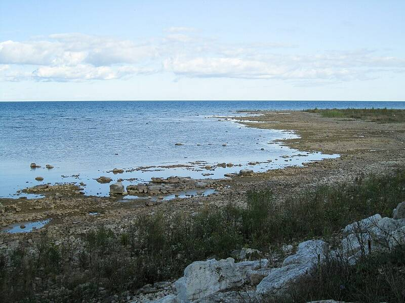

Object shot down over Lake Huron
Michigan, 2023

On February 12, 2023, an F-16 shot down an octagonal object over Lake Huron. Officials first said debris was not recovered, but documents released in November 2024 show it was, and that the object came from a company that sells weather monitoring equipment. 1
Open in the interactive Watcher
Related
Sources
- 2023 Lake Huron high-altitude object Wikipedia